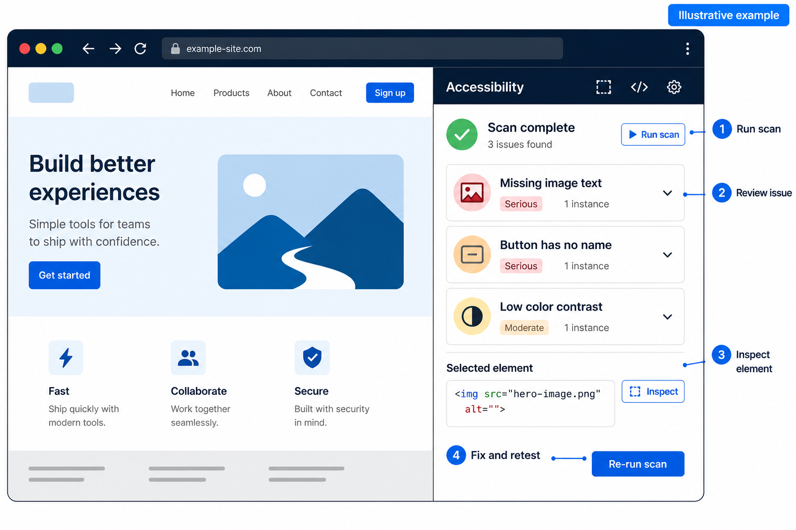
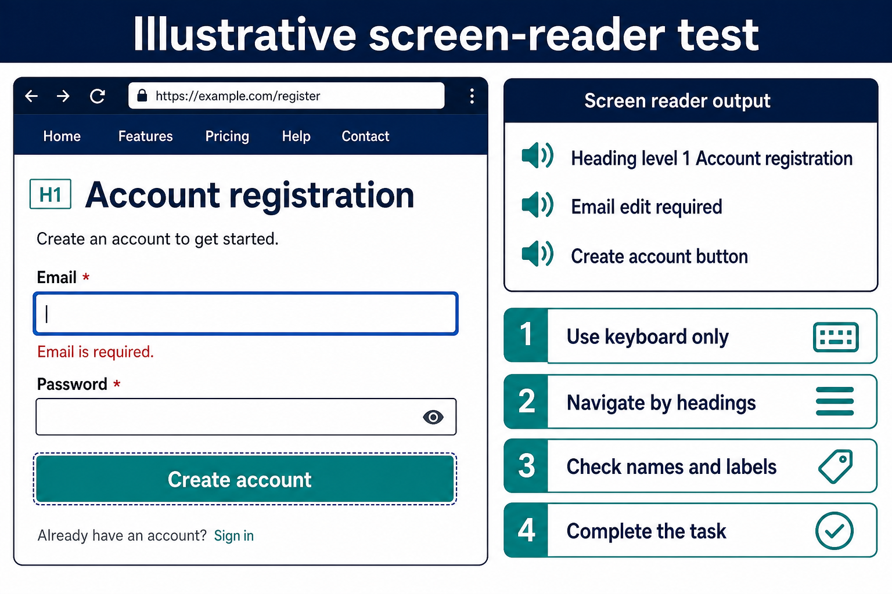
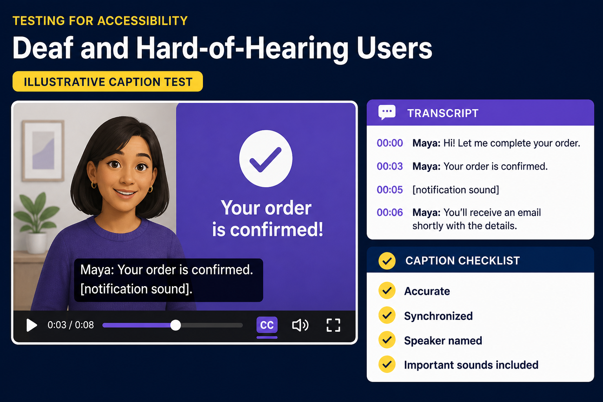

Can a blind customer register without seeing the screen? Can a Deaf customer understand a product video when the audio is muted? Can a Deafblind customer access the same information through text or a refreshable braille display?
These questions move accessibility testing beyond a checklist. They focus quality engineering on whether people can understand content and complete important tasks independently.
Deque axe DevTools identifies many code-level barriers against WCAG 2.2. No automated tool can evaluate the complete human experience. Combine automation, manual testing, assistive technologies, and feedback from people with disabilities.
Use Inclusive Language
Disability language is personal. Some people prefer identity-first language, such as “blind person” or “Deaf person,” while others prefer person-first language. “Deaf” is often capitalized for a cultural and linguistic identity. Ask for and respect each person’s preference; never assume everyone has the same needs.
What Are axe-core and axe DevTools?
- axe-core is Deque’s open-source accessibility engine.
- axe DevTools is a commercial toolkit including a browser extension, APIs, Axe Watcher, and a CLI.
- The browser extension is a practical starting point.
- Java Selenium, Playwright, and CLI integrations add repeatable checks to CI/CD.
Understand the Users and Their Tools
Blind users may navigate with NVDA, JAWS, VoiceOver, or TalkBack. They may move through headings, landmarks, links, forms, and tables with keyboard commands, or read with a refreshable braille display.
Deaf and hard-of-hearing users may rely on captions, transcripts, visual alerts, text chat, or sign-language interpretation. Captions must include meaningful sounds and speaker identification, not only spoken words.
Deafblind users may access content through braille. A descriptive transcript containing speech, sounds, and important visuals can make media more accessible.
What axe Can and Cannot Test
axe can detect missing alternative text, unlabeled controls, unnamed buttons or links, invalid ARIA, missing page language, and some structure and contrast issues.
axe cannot reliably decide whether alternative text is meaningful, whether a screen-reader journey is understandable, or whether captions are accurate and synchronized. The W3C states that tools support evaluation but cannot determine accessibility by themselves.
Beginner: Run Your First Scan
- Install the axe DevTools extension from the official store for a supported browser.
- Open a meaningful state: a form with errors, dialog, search results, or cart.
- Open Developer Tools, select the axe panel, and run the scan.
- Review the rule, impact, affected element, WCAG mapping, and guidance.
- Fix the issue and scan the same state again.

Report Defects With User Impact
axe output is evidence, not a complete defect. Reproduce the issue and explain the affected task and user impact.
Example: A screen reader announces the icon-only close control as “button.” The user cannot determine its purpose.
<button type="button" aria-label="Close sign-in dialog">
<svg aria-hidden="true" focusable="false"><!-- icon --></svg>
</button>Prefer native HTML and visible text. Use ARIA when needed to provide missing semantics, names, states, or relationships.
- Informative images need useful
alttext. Decorative images should usealt="". - WCAG AA contrast is usually 4.5:1 for normal text and 3:1 for large text. Check hover, focus, and error states.
- Placeholders are not labels. Associate visible text with the field.
- Headings must describe structure, not only look large.
- Invalid ARIA often creates more barriers than it removes.
Test for Blind Users
An axe scan is the starting point. Next, complete critical journeys using the keyboard and a screen reader.

Keyboard: Use Tab and Shift+Tab to navigate; Enter, Space, arrow keys, and Escape according to the control. Confirm visible, logical focus, correct dialog behavior, a skip link, and no keyboard trap.
Screen reader: Start with a supported combination such as NVDA with Chrome or Firefox, or VoiceOver with Safari. Move by headings, landmarks, links, forms, and tables. Check the page title, structure, control names, form errors, dialog focus, image alternatives, and dynamic updates.
Journeys: Test registration, sign-in, search, form correction, checkout, and support. Record barriers even when axe reports no violations.
Test for Deaf Users
Mute the device and complete the journey. No instruction, alert, or important media information should disappear.

- Prerecorded video: provide accurate, synchronized captions under WCAG 1.2.2.
- Live media: provide captions under WCAG 1.2.4.
- Caption quality: identify speakers and sounds such as
[notification sound]. - Audio-only content: provide a transcript; include important visuals in a descriptive transcript when needed.
<video controls>
<source src="product-demo.mp4" type="video/mp4">
<track kind="captions" src="product-demo-en.vtt" srclang="en" label="English" default>
</video>A caption file does not prove quality. Review its accuracy, synchronization, readability, and completeness.
Provide visible alternatives for audio alerts. Avoid “listen for the beep” without another cue. Offer text-based contact methods such as chat, email, or a form; support should not depend only on a voice call.
Advanced: Add axe to Java Selenium
Use the licensed package and version approved by your organization. Keep credentials outside source control and follow Deque’s Java installation guide.
driver.get("https://example.test/login");
AxeDriver axeDriver = new AxeDriver(driver);
Results results = new AxeSelenium().run(axeDriver);
assertTrue(
results.violationFree(),
() -> "Accessibility violations: " + results.getViolations()
);Scan after the page is stable and attach a report to CI. For legacy applications, prevent new critical issues first and reduce the baseline over time.
Zero violations means “axe detected no automated violations in this state.” It does not mean the page is fully accessible or WCAG conformant.
Practical Definition of Done
- Critical journeys work with keyboard and agreed screen readers.
- Names, labels, errors, and dynamic updates are announced.
- Images have appropriate text alternatives.
- Captions and transcripts have been reviewed.
- Audio alerts have a visual or text alternative.
- axe reports no unexplained new violations.
- Automated and manual evidence is attached to the work item.
Whenever possible, include blind, Deaf, hard-of-hearing, and Deafblind participants in research and usability testing. Their experiences should inform product decisions, not serve only as a final compliance checkpoint.
Conclusion
axe DevTools provides fast, consistent feedback, but accessibility quality requires more than a scan. Combine automation with keyboard testing, screen readers, caption and transcript review, and feedback from people with disabilities.
Primary CTA
Start with one critical journey today. Scan each meaningful state, test manually, document the user impact, and automate stable checks in CI.
Explore the official axe DevTools documentation and W3C accessibility resources. Share your testing practice in the discussion.
References
Tags: